P L A S T I C O L O R S U E es una empresa COLOMBIANA que ofrece servicios
profesionales de consultoría en diferentes ámbitos ambientales y de ingeniería,
especialmente los relacionados con la Gestión Integral de Residuos Sólidos Aprovechables,
teniendo la capacidad de establecer enlaces para la correcta captación...
P L A S T I C O L O R S U E es una empresa COLOMBIANA que ofrece
servicios profesionales de consultoría en diferentes ámbitos ambientales
y de ingeniería, especialmente los relacionados con la Gestión Integral
de Residuos Sólidos Aprovechables, teniendo la capacidad de establecer
enlaces para la correcta captación, comercialización, transformación,
certificación y disposición de dichos materiales.
PLASTICOLOR SUE nació como una iniciativa de jóvenes
ingenieros después de realizar estudios de posgrado en el exterior que regresaron
a la región con el ánimo de emprender y dar soluciones a problemáticas locales.
Es así que, a partir de diferentes iniciativas internacionales observadas y el
estudio de la situación global generada por los residuos sólidos, en especial el
plástico pos consumo, inicialmente se planteó un proyecto industrial enfocado en
la transformación de este tipo de plásticos.
Proyecto de aprovechamiento de residuos sólidos, zona minera de Quípama y Muzo
En conjunto con la Corporación Boyapaz y la Fundación Muzo, se desarrolló una estrategia de trabajo con la comunidad, orientada al planteamiento de un modelo productivo de emprendimiento alrededor de los residuos sólidos aprovechables generados en la zona minera de los municipios de Quípama y Muzo con la finalidad de dar una solución ambiental y socialmente sostenible a los problemas generados en torno a la disposición de este tipo de residuos.
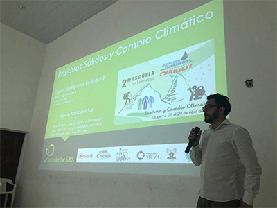
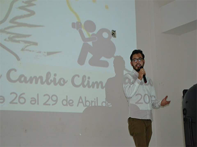
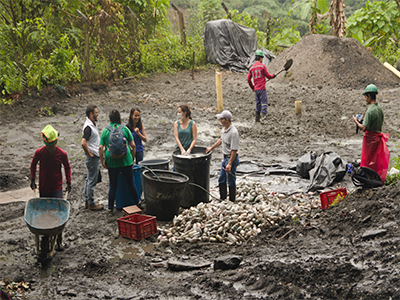
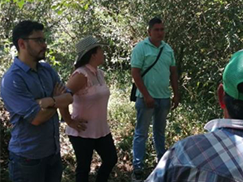
Foro ambiental instituciones educativas municipio de Saboyá
Participación en jornada de sensibilización ambiental con presencia de estudiantes y rectores de instituciones educativas rurales del municipio de Saboyá (Boyacá), transmitiendo el mensaje a las nuevas generaciones e impulsando modelos de emprendimiento desde sus instituciones.
Consultoría para efectuar la actualización y formulación del plan integral de residuos sólidos PGIRS para el municipio de Saboyá, Boyacá.
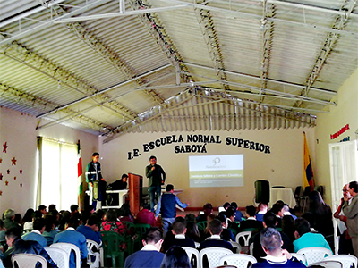
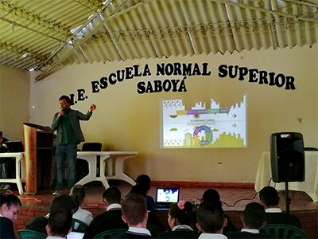
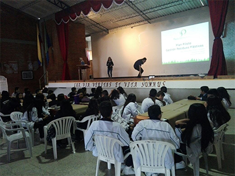
Participación y apoyo a dirección de medio ambiente de Boyacá.
PLASTICOLOR SUE realizó un proceso de investigación, seguimiento y acompañamiento a las actividades desarrolladas por la dirección de medio ambiente agua potable y saneamiento básico correspondientes al proyecto de “Adquisición de información sísmica Cordillera 2D/2017 con vibros en los departamentos de Boyacá, además de la participación en el consejo superior ambiental de Boyacá (COSAB).
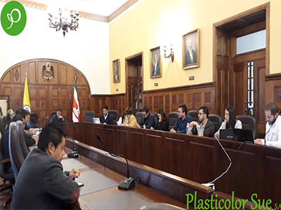
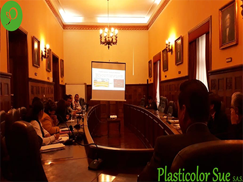
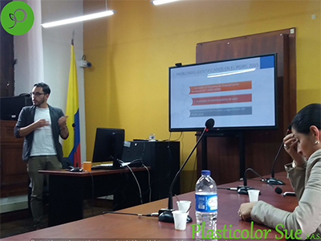
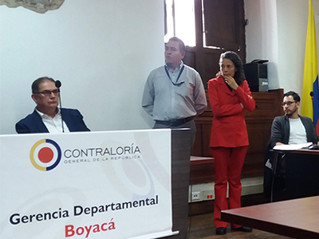
Apoyo a formalización de asociación de recuperadores de Chiquinquirá “la mariana”
PLASTICOLOR SUE junto con la corporación de desarrollo de Chiquinquirá, realizo proceso de apoyo y acompañamiento para la formalización de cerca de 50 familias de recuperadores quienes se organizaron legalmente como asociación de recuperadores” la mariana” una de las más grandes de Boyacá.
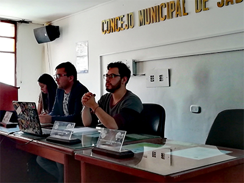
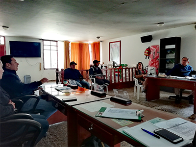
Participación en evento “Jóvenes líderes de occidente de Boyacá”.
PLASTICOLOR SUE participó con la presencia de cerca de 200 jóvenes líderes del occidente de Boyacá, en conferencia técnica denominada “Residuos Sólidos y Cambio Climático” con la exposición del Ingeniero Carlos Uriel Cortés, quien explico a los jóvenes la relación de los gases de efecto invernadero de los residuos sólidos y su contribución a acelerar el cambio climático, de igual forma explico la historia de PLASTICOLOR SUE llevando un mensaje de motivación y a generar modelos de emprendimiento en la región.
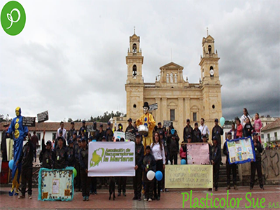
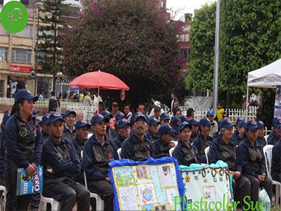
Plasticolor Sue S.A.S
P L A S T I C O L O R S U E es una empresa COLOMBIANA que ofrece servicios
profesionales de consultoría en diferentes ámbitos ambientales y de ingeniería,
especialmente los relacionados con la Gestión Integral de Residuos Sólidos Aprovechables,
teniendo la capacidad de establecer enlaces para la correcta captación, comercialización,
transformación, certificación y disposición de dichos materiales.
Somos implementadores certificados por ICONTEC del Sistema de Gestión Basura Cero bajo las directrices
ISO19011:2018 y complementario a la ISO14001:2015. Trabajamos desde una visión de
INGENIERÍA y SUSTENTABILIDAD, alineada con directrices nacionales y globales como
los ODS, Agenda 2030, Estrategia Nacional de Economía Circular y la Política de
Gestión Integral de Residuos Sólidos (CONPES 3874).
¿Quiénes somos?
P L A S T I C O L O R S U E es una empresa COLOMBIANA que ofrece
servicios profesionales de consultoría en diferentes ámbitos ambientales
y de ingeniería, especialmente los relacionados con la Gestión Integral
de Residuos Sólidos Aprovechables, teniendo la capacidad de establecer
enlaces para la correcta captación, comercialización, transformación,
certificación y disposición de dichos materiales.
Somos implementadores certificados por ICONTEC del Sistema de Gestión
Basura Cero bajo las directrices ISO19011:2018 y complementario a la
ISO14001:2015. Además, trabajamos desde la formulación e implementación
de programas de educación ambiental y gestión de proyectos productivos;
sensibilizamos y capacitamos buscando una transformación positiva de hábitos
ciudadanos; planteamos sinergias que permitan desarrollar soluciones innovadoras
y sustentables en búsqueda de mitigar el impacto ambiental generado por el
inadecuado manejo de los residuos sólidos, con un enfoque especial en el
aprovechamiento y transformación del plástico posconsumo y posindustrial
desde una visión de INGENIERÍA y SUSTENTABILIDAD, alineada con directrices
nacionales y globales como los ODS, Agenda 2030, Estrategia Nacional de Economía
Circular y la Política de Gestión Integral de Residuos Sólidos (CONPES 3874.
Adicionalmente, desde nuestra Responsabilidad Social Empresarial, basamos nuestros
sistemas de gestión en estrategias pedagógicas de educación ambiental, y en la
dignificación social e inclusión de la comunidad de Recuperadores de Oficio a
los sistemas públicos de aseo, según lo dicta el Decreto 596 del 2016.
Misión
PLATICOLOR SUE ofrece servicios profesionales de consultoría en torno
a la gestión integral de residuos sólidos aprovechables, teniendo la
capacidad de establecer enlaces para la correcta captación, comercialización,
certificación y disposición de dichos materiales. Trabajamos desde la
formulación e implementación de modelos de educación ambiental y proyectos
productivos, que permitan plantear soluciones innovadoras y sustentables
en búsqueda de mitigar el impacto ambiental generado por los residuos sólidos,
en especial los residuos plásticos.
Visión
Para el 2022 PLASTICOLOR SUE se proyecta a ser una empresa de
responsabilidad social con una estructura administrativa consolidada,
con sistemas gerenciales innovadores y una organización que permita el
desarrollo tecnológico, económico, social y ambiental.
Ser la compañía líder regional en la gestión y transformación
de plástico posconsumo, distinguiéndose por la búsqueda continua
de un desarrollo tecnológico, con altos niveles de productividad
y rentabilidad, incentivando el desarrollo de nuevos modelos económicos
en la región. (Producción).
Ser pioneros en el planteamiento y ejecución de campañas pedagógicas de
sensibilización ambiental, relacionadas con el manejo integral de residuos
sólidos aprovechables, cambio climático y sustentabilidad, orientadas a
poblaciones específicas, en procura de incentivar en la sociedad una relación
de equilibrio con su entorno. (Educación ambiental).
Ser líderes en la prestación de servicios profesionales y de consultoría
en aspectos ambientales y de ingeniería, siguiendo criterios técnicos,
normativos y estratégicos que aporten positivamente al cumplimiento de
los objetivos trazados. (Consultoría).
Realizar el eficaz y eficiente control administrativo
de los recursos físicos y financieros utilizados para el cumplimiento
del objeto de la empresa, por medio de la planificación, organización,
integración, control y evaluación de las políticas y estratégicas
establecidas por la Junta Directiva. (Administración).
Equipo de trabajo
Zulma Anaya Jaimes
MSc. Ing. Mecánica UNICAMP. Ing. Mecánica UIS.
Julián Rengifo Pérez
Esp. Manejo sostenible de Suelos UDCA. Ing. Geógrafo y Ambiental UDCA.
Carlos Uriel Cortes
MSc. Ing. Mecánica UNICAMP. Ing. Mecánica UIS.
Edgar Fernando Cortes
PhD. Energía UFABC. Ing. Mecánica UIS.
Yazmin Carolina Cortés
Licenciada en Español y Filologia Clasica. Universidad Nacional de Colombia.
Julian David Cancelado
Ingeniero de Sistemas. Fundación Universitaria de San Gil.
HISTORIA
PLASTICOLOR SUE nació como una iniciativa de jóvenes
ingenieros después de realizar estudios de posgrado en el
exterior que regresaron a la región con el ánimo de emprender
y dar soluciones a problemáticas locales. Es así que, a partir
de diferentes iniciativas internacionales observadas y el estudio
de la situación global generada por los residuos sólidos, en especial
el plástico pos consumo, inicialmente se planteó un proyecto
industrial enfocado en la transformación de este tipo de plásticos.
Al explorar el mercado base, la cultura del reciclaje en la región
y la baja participación de los actores involucrados, comenzaron a
surgir problemas más profundos que la simple generación de residuos
sólidos, como es la desinformación e indiferencia de las comunidades
y las nuevas generaciones en esta temática, la falta de planes públicos
eficientes, el colapso de rellenos sanitarios, fallas en los planes
educativos ambientales y sobre todo un olvido absoluto de la comunidad
vulnerable que vive día a día del reciclaje de este tipo de residuos.
En este sentido, al analizar la situación desde un ámbito global e ir
escalando el problema a un contexto nacional, regional y local, el equipo
profesional que hoy conforma la empresa decidió plantear un proyecto más
ambicioso que permita organizar desde una base educativa, política y de
responsabilidad social, el manejo integral de los residuos sólidos aprovechables.
Es así como a inicios de 2017 comienza a estructurarse el proyecto que hoy se
llama PLASTICOLOR SUE y que encamino a construir una empresa de ingeniería que
pueda trabajar desde una base social, organizativa y de apoyo a las políticas
públicas, además de generar un crecimiento industrial, económico y laboral en
Chiquinquirá y la región.
RESPONSABILIDAD AMBIENTAL: PROGRAMA EDUCANDO Y RECICLANDO
Es la estrategia de educación ambiental implementada por PLASTICOLOR SUE,
quien de acuerdo a sus objetivos estratégicos y siguiendo las directrices
nacionales busca impulsar el cumplimiento de la normatividad ambiental
vigente y apoyar los proyectos ambientales escolares (PRAE) como ejes
transversales en el manejo de residuos sólidos aprovechables.
El programa involucra a la comunidad de las instituciones educativas a través
de campañas, conferencias, planes integrados con estudiantes y docentes, usando
conceptos fundamentales como las tres R’s (Reusar, Rechazar y Reciclar) y el
supraciclaje (upcycling). Además, el programa se ha extrapolado a diferentes
segmentos poblacionales como conjuntos residenciales, sector comercial,
parques e iglesias de la ciudad de Chiquinquirá, con el objetivo de crear
una cultura ambiental en el municipio y lograr como empresa el aprovechamiento
de los residuos sólidos. Este programa más allá de la educación ambiental
también articula la recolección de los residuos sólidos aprovechables
generados y certifica el aprovechamiento a los actores involucrados.
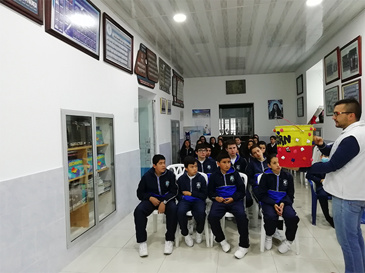
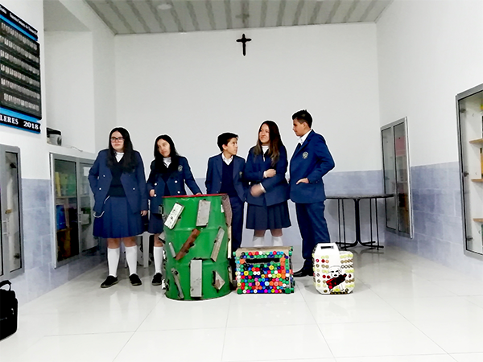
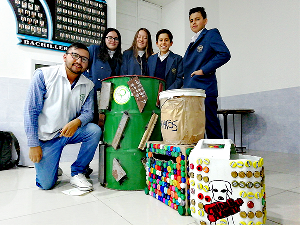
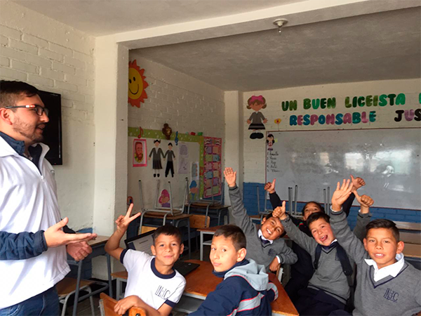
RESPONSABILIDAD SOCIAL: ASOCIACIÓN DE RECUPERADORES Y RECOLECCIÓN SELECTIVA)
Otro frente de acción surge desde la formulación de modelos de recolección
selectiva, partiendo de la base de responsabilidad social con la comunidad.
Desde sus inicios PLASTICOLOR SUE viene trabajando con la población de
recuperadores, logrando consolidar a mediados del 2018 y con apoyo de la
Corporación de Desarrollo de Chiquinquirá, la Asociación de Recuperadores
La Mariana, la cual dio personería jurídica y organizó a 50 recuperadores
de oficio de la ciudad y con la cual se viene articulando rutas de recolección
selectiva integradas con el programa Educando y Reciclando.
Posteriormente, basados en los programas de responsabilidad social y ambiental
la empresa recolecta transforma y comercializa los materiales, en busca de
consolidar un mercado estable que mejore las condiciones laborales de la
comunidad de recuperadores de oficio. Para el proceso se cuenta con la
maquinaria industrial base y con aliados estratégicos, lo cual nos permite
una mejor operación, con el fin de ampliar la zona de cobertura e incentivar
el crecimiento de nuevas empresas en la región.
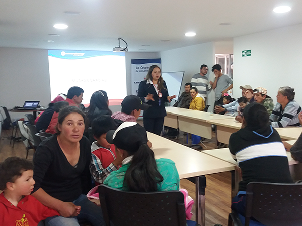
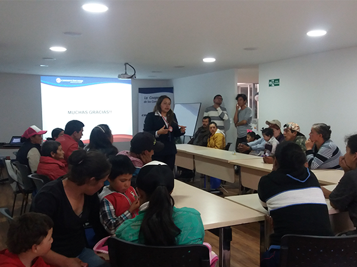
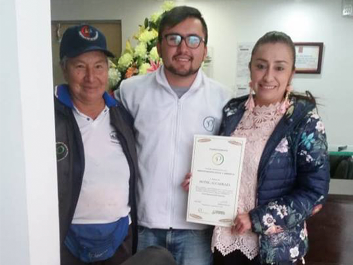
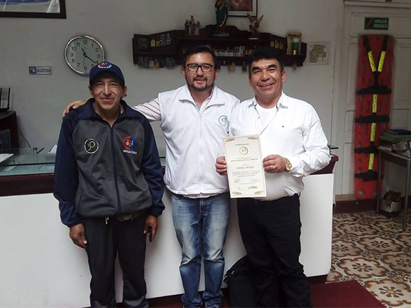
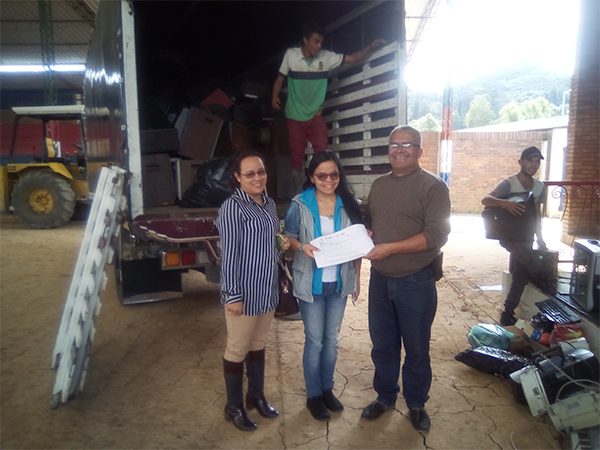
PLANES INTEGRALES DE RESIDUOS SÓLIDOS (POLÍTICAS PÚBLICAS)
Basados en la experiencia adquirida desde el trabajo de base y
el equipo de profesionales altamente calificado, PLASTICOLOR SUE
se transformó en una empresa de consultoría y asesoría, teniendo
la capacidad de ser proponente en licitaciones públicas, en contratos
relacionados con la formulación, ejecución y actualización de Planes
de Gestión Integral de Residuos Sólidos (PGIRS). De esta manera la
empresa participó en la actualización del PGIRS de la ciudad de
Chiquinquirá, diseñando las rutas de recolección selectiva, liderando
el proceso de formalización de recuperadores de oficio y de la formulación
de las campañas educativas. Posteriormente mediante licitación pública el
equipo de la empresa fue seleccionado para realizar la formulación del PGIRS
del municipio de Saboyá. Además, el equipo de profesionales de la empresa
contrato con la Gobernación de Boyacá el diseño de estrategias para la
protección del medio ambiente en la región, brindando asesoría en la
defensa del territorio para evitar la exploración sísmica de yacimientos
no convencionales que se pretendía realizar en el occidente de Boyacá.
MODELOS PRODUCTIVOS Y SUSTENTABLES EN COMUNIDADES RURALES
Conociendo la problemática de la región del occidente de Boyacá
y sus modelos asistencialistas, la empresa PLASTICOLOR SUE en alianza
con la Corporación Boyapaz y la Fundación Muzo, planteo un plan de acción
que busca cambiar la vocación históricamente minera de la población de los
municipios de Quípama y Muzo, a través de la organización de la comunidad
para realizar el manejo de los residuos sólidos generados por la empresa
multinacional Minería Texas Colombia (MTC), desarrollando campañas de
sensibilización y brindando asesorías técnica y comercial para la venta
de dichos residuos. También se realizaron jornadas de limpieza del rio y
de la zona, en las cuales se recuperaron residuos que llevaban enterrados
por más de 30 años cerca de las laderas del río. De esta forma, además de
crear nuevos modelos de emprendimiento en la región y solucionar un problema
ambiental, se brindó la oportunidad a estas empresas multinacionales de
cumplir su responsabilidad social y normativa, lo cual constituye otro frente
comercial para nuestra empresa.